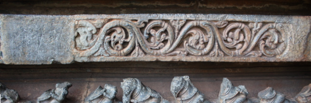

<?xml version="1.0" encoding="UTF-8"?>
<rss version="2.0"
	xmlns:content="http://purl.org/rss/1.0/modules/content/"
	xmlns:wfw="http://wellformedweb.org/CommentAPI/"
	xmlns:dc="http://purl.org/dc/elements/1.1/"
	xmlns:atom="http://www.w3.org/2005/Atom"
	xmlns:sy="http://purl.org/rss/1.0/modules/syndication/"
	xmlns:slash="http://purl.org/rss/1.0/modules/slash/"
	>

<channel>
	<title>Chronosynclastic Infundibulum &#187; history</title>
	<atom:link href="http://www.semanticoverload.com/tag/history/feed/" rel="self" type="application/rss+xml" />
	<link>http://www.semanticoverload.com</link>
	<description>The world through my prisms</description>
	<lastBuildDate>Thu, 07 Apr 2011 17:36:17 +0000</lastBuildDate>
	<language>en-US</language>
	<sy:updatePeriod>hourly</sy:updatePeriod>
	<sy:updateFrequency>1</sy:updateFrequency>
	<generator>http://wordpress.org/?v=3.5</generator>
		<item>
		<title>When science went international</title>
		<link>http://www.semanticoverload.com/2010/09/04/when-science-went-international/</link>
		<comments>http://www.semanticoverload.com/2010/09/04/when-science-went-international/#comments</comments>
		<pubDate>Sat, 04 Sep 2010 21:06:36 +0000</pubDate>
		<dc:creator>Semantic Overload</dc:creator>
				<category><![CDATA[history]]></category>
		<category><![CDATA[science]]></category>
		<category><![CDATA[chemistry]]></category>
		<category><![CDATA[conference]]></category>

		<guid isPermaLink="false">http://www.semanticoverload.com/?p=771</guid>
		<description><![CDATA[The notion of international conferences are a commonplace anymore. But such was not the case over 150 years ago. The first international scientific conference was held on Sept. 3rd, 1860. Sarah Everts marks the 150 years of science as international discipline with this fascinating article in C&#38;E News. Here is an excerpt: When the 1860 [...]]]></description>
				<content:encoded><![CDATA[<p>The notion of international conferences are a commonplace anymore. But such was not the case over 150 years ago. The first international scientific conference was held on Sept. 3rd, 1860. Sarah Everts marks the 150 years of science as international discipline with this <a href="http://pubs.acs.org/cen/science/88/8836sci1.html">fascinating article in C&amp;E News</a>.</p>
<p>Here is an excerpt:</p>
<blockquote><p>When the 1860 conference began, chemistry was in a total state of  disarray. Although most chemists believed in atoms and molecules, nobody  could agree on molecular formulas. Even simple molecules such as water  were hotly debated: Most leading chemists at the time claimed that  water’s molecular formula was OH, and a minority argued that it was H<sub>2</sub>O.  More complex molecules were an even bigger battleground: At least 19  different representations of acetic acid were being used in textbooks of  that era.</p></blockquote>
<p>The motivation for the conference is obvious. Read the <a href="http://pubs.acs.org/cen/science/88/8836sci1.html">entire article</a> to understand its significance.</p>
]]></content:encoded>
			<wfw:commentRss>http://www.semanticoverload.com/2010/09/04/when-science-went-international/feed/</wfw:commentRss>
		<slash:comments>0</slash:comments>
		</item>
		<item>
		<title>Mahabali, Ramayan, Aryans, and Dravidians</title>
		<link>http://www.semanticoverload.com/2009/11/18/mahabali-ramayan/</link>
		<comments>http://www.semanticoverload.com/2009/11/18/mahabali-ramayan/#comments</comments>
		<pubDate>Wed, 18 Nov 2009 08:49:41 +0000</pubDate>
		<dc:creator>Semantic Overload</dc:creator>
				<category><![CDATA[history]]></category>
		<category><![CDATA[india]]></category>
		<category><![CDATA[religion]]></category>
		<category><![CDATA[aryan]]></category>
		<category><![CDATA[dravidian]]></category>
		<category><![CDATA[hindu]]></category>
		<category><![CDATA[mythology]]></category>

		<guid isPermaLink="false">http://www.semanticoverload.com/?p=356</guid>
		<description><![CDATA[What if the story of Mahabali and Ramayan were narrating the same episode in ancient Indian history? Remember that the story of Mahabali shows up in Vamana Purana whereas Ramayana is one of the Itihaasas. It is not surprising that the same incident would inspire two different mythological texts during two different periods for two different purposes. However, I claim that they are referring to the same chapter in ancient Indian history, that of the victory of Indo-Aryans over Dravidians. [...]]]></description>
				<content:encoded><![CDATA[<p>What if the story of <a title="The story of Mahabali" href="http://en.wikipedia.org/wiki/Mahabali">Mahabali</a> and <a title="Ramayana" href="http://en.wikipedia.org/wiki/Ramayana">Ramayan</a> were narrating the same episode in ancient Indian history? Remember that the story of Mahabali shows up in <a title="Vamana Purana" href="http://en.wikipedia.org/wiki/Vamana_Purana">Vamana Purana</a> whereas Ramayana is one of the<a title="Itihaasas in Hindu Mythology" href="http://en.wikipedia.org/wiki/Indian_epic_poetry"> Itihaasas</a>. It is not surprising that the same incident would inspire two different mythological texts during two different periods for two different purposes. However, I claim that they are referring to the same chapter in ancient Indian history, that of the victory of<a href="http://en.wikipedia.org/wiki/Indo-Aryan_peoples"> Indo-Aryans</a> over <a href="http://en.wikipedia.org/wiki/Dravidian_peoples">Dravidians</a>.<span id="more-356"></span></p>
<h3>The story of King Mahabali</h3>
<p>Mahabali was the king of <a href="http://en.wikipedia.org/wiki/Asura"><em>asuras</em></a> (who are a class of deites, and not demons; demons are called <a title="Rakshasa in Hindu Mythology" href="http://en.wikipedia.org/wiki/Rakshasa"><em>rakshasas</em></a> in Hindu mythology). The asuras ruled in Paatala loka (which is one of the 14 worlds, and is not hell; hell is called <a title="Naraka in Hindu Mythology" href="http://en.wikipedia.org/wiki/Naraka"><em>Narka</em></a> in Hindu mythology). Mahabali expanded his empire to all the 7 &#8216;lower&#8217; worlds and then invaded <em>Bhuloka</em> (or the earthly world): the lowest of the 7 &#8216;higher&#8217; worlds. Then he set his eyes on the remaining &#8216;higher&#8217; worlds which were ruled by <a title="Devas" href="http://en.wikipedia.org/wiki/Deva_(Hinduism)"><em>devas</em></a> (another class of deities). The king of devas, Indra, was worried by this expansion and realized that he was no match for Mahabali, so he approached lord Vishnu to save his kingdom. Vishnu then took the form of <em>vamana</em>, or a brahmin boy, and approached Mahabali for <em>Daana</em> or donation/alms. Vamana asked for three steps of land for him to live in. Mahabali agreed. Then Vamana grew so large that in one step he covered all of the higher worlds, and in another step he covered the Bhuloka, and asked Mahabali where he should place his third step. Realizing that he has been bested, Mahabali asked the third step to be put on his head and Vishnu placed his third step on Mahabali&#8217;s head sending him to Paatala.</p>
<h3>The story of Ramayana (hopelessly abridged)</h3>
<p>Prince Rama is sent on an exile with his wife and brother. They wander to south of Vindhya mountains and down south, king Ravana of Lanka abducts Rama&#8217;s wife. While searching for his wife he comes across a kingdom of monkeys (<em>vanaras</em>) and with their help he defeats Ravana and rescues his wife.</p>
<h3>Obvious connections</h3>
<p>So how do these stories point to Aryans and Dravidians? The most obvious references here are (a)the notion of Mahabali being from the &#8216;lower&#8217; world (possibly refering to south India) and the devas and Vishnu being from the &#8216;higher&#8217; workd (possibly refering to north India, and (b) Rama being an <em>Arya putra</em> from Ayodhya (in north India) and Ravana being from Lanka (in the south) and the Dravidian people being referred to as &#8216;monkeys&#8217;.</p>
<p>But we need more than such annotated instrumentation to make our case.</p>
<h3>Mahabali and Onam</h3>
<p>First, lets look at the case of Mahabali. King Mahabali is said to been a very just king and all of his subjects were said to have lived properously during his reign. Yet he is cast down back to Paatala. Also, Paatala could well refer to the state of Kerala (again, in the south) because the Hindu  festival of<a title="Onam" href="http://en.wikipedia.org/wiki/Onam"> Onam</a> celerbrated only in Kerala is a celebration of King Mahabali, <em>their</em> King Mahabali. It is worth noting that Hindus in Kerala celebrate the reign of an asura king who was cast down by Vishnu and interestingly, such a celebration is endemic to Kerala. It is not celebrated anywhere else!</p>
<h3>Vijayadashami in north and south India</h3>
<p>In north India the Hindu festival of <a href="http://en.wikipedia.org/wiki/Vijayadashami">Vijayadashami</a> marks the defeat of Ravana by Rama. However, in south India, the same festival marks the defeat of <a href="http://en.wikipedia.org/wiki/Mahishasura">Mahishaura</a> by Durga. Why such different reasons to mark the same festival? The only bridge between the two is the tale that Rama performed a sacrifice to Durga in the eve of the battle with Ravana. This suggests that these were really two different festivals in two different cultures and religions. They were later joined together by expansion of Hinduism into all of India.</p>
<h3>The legend of Vindhya and Agasthya</h3>
<p>The legend is that Vindhya mountains (which separates north and south India) started growing to such heights that it challenged the path of sun in the sky. So sage <a href="http://en.wikipedia.org/wiki/Agastya">Agastya</a>, in order to stop this growth asked Vindhyas to stoop down so that he may cross to down south. He also extracted a promise that Vindhyas would not grow any higher until he returned back north. But Agastya permanently settled in the south, and so the Vindhyas did not grow anymore.</p>
<p>The story (which is from the puranas, and is said to have occured before the itihaasas) can be interpreted as the northerners&#8217; (Aryans) conquest over the Vindhyas (much like the conquest of Mt. Everest) which paved way for migration to south India, thus triggering contact with the south Indian Dravidians.</p>
<h3>Genetic Markers, Caste System, and the North-South Divide</h3>
<p>A recently published <a href="http://www.timesonline.co.uk/tol/news/science/genetics/article6846424.ece">study of genetic profiles of Indian peoples</a> concludes a distinct divide among Ancestral North Indian (ANI) tribes and Ancestral South Indian (ASI) tribes with very strong evidence of enogamy. The study  also revealed that individuals descending from the ANI tribes tend to be in the &#8216;higher castes&#8217; and are genetically closer to europeans where as individuals descending from the ASI tribes tend to be in the &#8216;lower castes&#8217;. This again points to an Aryan-Dravidian divide that has been there for millenia, and the strong enogamy suggests conflict and competition between the groups, and looks like the Aryans won the struggle and encoded it into their mythology which was then shared with the Dravidians when they all became a single Hindu people, yet isolated from each other by caste barriers.</p>
]]></content:encoded>
			<wfw:commentRss>http://www.semanticoverload.com/2009/11/18/mahabali-ramayan/feed/</wfw:commentRss>
		<slash:comments>15</slash:comments>
		</item>
		<item>
		<title>Hoysala construction techniques in Halebidu</title>
		<link>http://www.semanticoverload.com/2008/12/18/hoysala-construction-techniques/</link>
		<comments>http://www.semanticoverload.com/2008/12/18/hoysala-construction-techniques/#comments</comments>
		<pubDate>Thu, 18 Dec 2008 14:15:10 +0000</pubDate>
		<dc:creator>Semantic Overload</dc:creator>
				<category><![CDATA[history]]></category>
		<category><![CDATA[india]]></category>
		<category><![CDATA[Carving]]></category>
		<category><![CDATA[Construction Technique]]></category>
		<category><![CDATA[Hoysala]]></category>
		<category><![CDATA[Stone]]></category>
		<category><![CDATA[Temple]]></category>

		<guid isPermaLink="false">http://www.semanticoverload.com/?p=284</guid>
		<description><![CDATA[Until recently my plans of seeing Halebidu seemed jinxed. I always started with the temple in Belur and by the time I was done with Belur it was too late to see Halebidu properly. I was told that Halebidu was much more impressive than Belur, but I hadn't had a chance to see it well until a few days ago.

A few days ago I visited the ruins of the temples in Halebidu. It was quite a sight to behold. And this, despite the fact that the temple was, in fact, incomplete, and had been vandalized by the Muslim invaders first, and the British later. Much like Belur, each carving in the temple tells a story. Each carving or sculpture deserves its own post. So I won't even attempt to describe my entire visit in this post. I might write up separate posts for select sculptures later, but for now, I'd like to focus on the techniques used by the Hoysalas to build the temples.]]></description>
				<content:encoded><![CDATA[<p>Until recently my plans of seeing <a title="Halebidu: Wikipedia" href="http://en.wikipedia.org/wiki/Halebidu">Halebidu</a> seemed jinxed. I always started with the temple in <a title="Belur: Wikipedia" href="http://en.wikipedia.org/wiki/Belur">Belur</a> and by the time I was done with Belur it was too late to see Halebidu properly. I was told that Halebidu was much more impressive than Belur, but I hadn&#8217;t had a chance to see it well until a few days ago.</p>
<p>A few days ago I visited the ruins of the temples in <a title="Halebidu: Wikipedia" href="http://en.wikipedia.org/wiki/Halebidu">Halebidu</a>. It was quite a sight to behold. And this, despite the fact that the temple was, in fact, incomplete, and had been vandalized by the Muslim invaders first, and the British later. Much like Belur, each carving in the temple tells a story. Each carving or sculpture deserves its own post. So I won&#8217;t even attempt to describe my entire visit in this post. I might write up separate posts for select sculptures later, but for now, I&#8217;d like to focus on the techniques used by the Hoysalas to build the temples.<span id="more-284"></span></p>
<h3>Foundation Stone Placement</h3>
<p>The Halebidu temple complex took over a 190 years to build. Interestingly, it was a mortar-less construction. The temples were built with layers of stone laid one upon the other such that they form a jigsaw with the stones&#8217; weight holding them in place. Take a look at the foundation stones:</p>
<div id="attachment_293" class="wp-caption alignnone" style="width: 646px"><p class="wp-caption-text">Foundation Stones</p></div>
<div id="attachment_285" class="wp-caption alignleft" style="width: 345px"><p class="wp-caption-text">Stone Slab Arrangement Schematic</p></div>
<p>Each set of stone slabs are placed one next to the other and in layers. On top of each stone slab a hole is drilled such that the holes in stone slabs that are one on top of the other are aligned together. Before laying the stone slab on top, an iron rod is place on the hole in the bottom slab and the stone slab on top is placed such that the iron rod fits into the top slab as well. This secures two adjacent stone slabs, and their weight keeps them in place.</p>
<h3>Lathe-turned Pillars</h3>
<p>The next are pillars. Lathe-turned cylindrical pillars are a distinctive feature of the Hoysala architecture (Mind you this is in the 12th century C.E!!). The prime movers for these lathes were horses and elephants. To give you an idea of the precision and the finish they managed to achieve, here is a picture:</p>
<div id="attachment_288" class="wp-caption alignnone" style="width: 437px"><p class="wp-caption-text">Lathe-turned Pillars</p></div>
<p>Note that the pillars are not monolithic. They are multiple squat cylindrical stone structures which have been held together using a technique that is similar to the one which holds the foundations stone slabs together. Now if that isn&#8217;t impressive enough, some of these pillars could actually rotate! Zooming into the head of such a pillar reveals this:</p>
<div id="attachment_289" class="wp-caption alignnone" style="width: 398px"><p class="wp-caption-text">Pillar Head</p></div>
<p>Notice how the pillar seems to be going into an inverted cylindrical receptacle. Between the pillar and the walls of the receptacle once rolled stone ball bearings, and that&#8217;s how the pillars rotated!</p>
<h3>Carvings on the Pillars</h3>
<p>Next come the carvings on the pillars. Looking at the carvings on the pillars I though that the squat cylinders which make up the pillar have the carving done on them first and are subsequently installed into place. However, this half done pillar convinced me otherwise:</p>
<div id="attachment_291" class="wp-caption alignnone" style="width: 650px"><p class="wp-caption-text">Incomplete Carving</p></div>
<h3>Statues on the Pillars</h3>
<p>The junction between the pillars and the roof are adorned with monolithic stone statues as seen below:</p>
<div id="attachment_294" class="wp-caption alignnone" style="width: 650px"><p class="wp-caption-text">Statues Adorning the Pillar</p></div>
<p>Again, the technique used to install these statues is very similar to the technique used to keep the foundation stones together. A clue to this is seen in a corner where the statue has been vandalized by the British (and now sits in the British museums), take a look:</p>
<div id="attachment_295" class="wp-caption alignleft" style="width: 310px"><p class="wp-caption-text">Vandalized Corner</p></div>
<p>See the square hold in the stone slab on the roof in the top left side of the photograph? A similar hole can be bound on the pillar where the base of the statue stood.</p>
<p>This implies that the statue was installed at the same time as the stone slabs were laid on the roof. Just imagine the logistics and coordination necessary to accomplish this across four pillars, four statues per pillar, and all of it simultaneously!</p>
<h3>General Techniques for Stone Carvings</h3>
<p>The stone carvings all over the temple follow a similar pattern. The smooth and polished stone slabs are put in place first as seen below:</p>
<div id="attachment_296" class="wp-caption alignnone" style="width: 644px"><p class="wp-caption-text">Starting with a blank Slate</p></div>
<p>On the blank slab the sculptures then carve a rough outline of the design they wish to realize. We see a glimpse of this process below:</p>
<div id="attachment_297" class="wp-caption alignnone" style="width: 650px"><p class="wp-caption-text">Carving the outline</p></div>
<p>After this begins the actual sculpting of the stone. Below is a partially done piece. The finished carving is to the left and the work-in-progress carving is to the right (duh!).</p>
<div id="attachment_298" class="wp-caption alignnone" style="width: 650px"><p class="wp-caption-text">Work-in-progess Carving</p></div>
<p>Using such techniques, the Hoysala constructed magnificent temples all around the Karnataka region. The twin temple in Halebidu was under construction for about 190 years (and still incomplete)! Despite this, its still quite a sight to behold. Look for yourself:</p>
<div id="attachment_300" class="wp-caption alignnone" style="width: 650px"><p class="wp-caption-text">Temple at Halebidu</p></div>
]]></content:encoded>
			<wfw:commentRss>http://www.semanticoverload.com/2008/12/18/hoysala-construction-techniques/feed/</wfw:commentRss>
		<slash:comments>11</slash:comments>
		</item>
		<item>
		<title>Gandhi&#8217;s Legacy</title>
		<link>http://www.semanticoverload.com/2008/09/02/gandhis-legacy/</link>
		<comments>http://www.semanticoverload.com/2008/09/02/gandhis-legacy/#comments</comments>
		<pubDate>Tue, 02 Sep 2008 05:38:57 +0000</pubDate>
		<dc:creator>Semantic Overload</dc:creator>
				<category><![CDATA[history]]></category>
		<category><![CDATA[india]]></category>
		<category><![CDATA[freedom]]></category>
		<category><![CDATA[Gandhi]]></category>
		<category><![CDATA[legacy]]></category>

		<guid isPermaLink="false">http://www.semanticoverload.com/?p=161</guid>
		<description><![CDATA[I have often wondered about the effectiveness of Mahatma Gandhi&#8217;s role in securing India&#8217;s freedom. Was it Mahatma Gandhi and other freedom fighters&#8217; struggle that secured India its freedom, or would sovereignty have been granted anyway? Of course, the high school history books would have none of this. They emphatically state that Gandhiji and others [...]]]></description>
				<content:encoded><![CDATA[<p><a href="../../../wp-content/uploads/2008/09/gandhi.jpg"></a></p>
<p>I have often wondered about the effectiveness of Mahatma Gandhi&#8217;s role in securing India&#8217;s freedom. Was it Mahatma Gandhi and other freedom fighters&#8217; struggle that secured India its freedom, or would sovereignty have been granted anyway? Of course, the high school history books would have none of this. They emphatically state that Gandhiji and others forced the Great British Empire into submission and gave us the free nation. But let&#8217;s not fool ourselves into lending authenticity to history books written under the heavy influence of caste and religion based politics. Lets take a closer look at what really happened. And lets not narrow our focus down to India, but look at world events are large.</p>
<p><span id="more-161"></span></p>
<p>For starts, I choose to dismiss the claim that if it hadn&#8217;t been for Gandhi and others, we wouldn&#8217;t have secured our freedom. Why? Because between 1940 to 1960 (or whereabouts) around 27 countries gained independence from the colonial power (source: <a href="http://en.wikipedia.org/wiki/Independence_Day">wikipedia</a>). Now that&#8217;s too large a number for it to be coincidental. There is definitely a pattern here, and pattern often follows causation. So what happened in the 30&#8242;s and 40&#8242;s that ended colonialism in such a dramatic fashion in over two dozen countries? Answer: World War II. The world war was such a severe strain and drain on the imperial forces that they could no longer had the economic, political, and military power to sustain the colonies. Consequently, they had to relent to the indigenous separatist movements, and at times even voluntarily give up on colonies (the latter happened with many countries in Africa; this explains why 30% of political boundaries in Africa are straight lines: because they were drawn on the map, not on the ground). Personally, I find this argument a lot more compelling that what the story that history books tell.</p>
<p>Natural question/accusation is: Does this diminish Gandhi&#8217;s legacy vis-a-vis free India? Ironically, I find myself saying &#8216;no&#8217;. The British may have given India its political identity, but it was Gandhi who gave India its cultural and social identity. His freedom movement gave people a sense of community, a sense of group identity. To a large extent, this is the reason why India is one of the most successful democracies in the world where as a large part of Africa is still struggling to establish themselves as a nation.</p>
<p>It is important to remember that the concept of a nation-state was imposed upon most colonies (on independence) by their colonial powers. But the people, for most part, were not ready to embrace it. The civil wars in Africa and Iraq typify that sociological resistance. But somehow it was different in India. Yes, there was civil unrest in India following its independence, but nothing crippling. And this was despite the fact that provinces in India were as different from each other as countries were in Europe. It took a tyrant to hold Shias, Sunnis, and Kurds in a united Iraq, whereas India has held its own with over a dozen religions, 50 languages, hundreds of disparate communities. How? Why? The answer is M.K. Gandhi. It is because Gandhi helped bind people together as Indians, he created the nation-state of India among everyone living there. Seldom has any individual made such an impact on such a diverse society.</p>
<p>So yes, Gandhi did deliver India its freedom, its true freedom. But not how the history books describe it. His legacy is much more palpable than dates and events in a book.</p>
]]></content:encoded>
			<wfw:commentRss>http://www.semanticoverload.com/2008/09/02/gandhis-legacy/feed/</wfw:commentRss>
		<slash:comments>20</slash:comments>
		</item>
		<item>
		<title>Zeitgeist</title>
		<link>http://www.semanticoverload.com/2007/09/23/zeitgeist/</link>
		<comments>http://www.semanticoverload.com/2007/09/23/zeitgeist/#comments</comments>
		<pubDate>Mon, 24 Sep 2007 02:59:51 +0000</pubDate>
		<dc:creator>Semantic Overload</dc:creator>
				<category><![CDATA[debate]]></category>
		<category><![CDATA[discussion]]></category>
		<category><![CDATA[history]]></category>
		<category><![CDATA[politics]]></category>
		<category><![CDATA[religion]]></category>
		<category><![CDATA[science]]></category>
		<category><![CDATA[society]]></category>
		<category><![CDATA[technology]]></category>
		<category><![CDATA[Uncategorized]]></category>
		<category><![CDATA[US]]></category>
		<category><![CDATA[video]]></category>
		<category><![CDATA[conspiracy]]></category>

		<guid isPermaLink="false">http://semanticoverload.gaddarinc.com/?p=121</guid>
		<description><![CDATA[Zeitgeist &#8212; The movie although a conspiracy theory, and may not all true, does have some sense of reality in it. I am the first admit that there are quite a few &#8216;facts&#8217; in the movie that are, well, just plain wrong. For instance, &#8216;Krishna&#8217; being a virgin birth being one of them. However, be [...]]]></description>
				<content:encoded><![CDATA[<p><a href="http://www.zeitgeistmovie.com/">Zeitgeist</a> &#8212; The movie although a conspiracy theory, and may not all true, does have some sense of reality in it. I am the first admit that there are quite a few &#8216;facts&#8217; in the movie that are, well, just plain wrong. For instance, &#8216;Krishna&#8217; being a virgin birth being one of them. However, be sure not to throw the baby out with the bath water.</p>
<p>The <a href="http://www.zeitgeistmovie.com/statement.htm">statement</a> on the website says:</p>
<blockquote><p>
Zeitgeist was created as a non-profit filmiac expression to inspire people to start looking at the world from a more critical perspective and to understand that very often things are not what the population at large think they are. The information in Zeitgeist was established over a year long period of research and the current Source page on this site lists the basic sources used / referenced. Soon, an Interactive Transcript will be online with detailed footnotes and links so exact sources and further research can be relayed.</p>
<p>&#8230;
</p></blockquote>
<p>Here&#8217;s the movie for your viewing. Note that the movie is 2 hours long, so make sure you have enough time to watch it. But I guarantee that you will have strong opinions about it one way or the other.<br />
Don&#8217;t forget to check out the <a href="http://www.zeitgeistmovie.com/clarifications.htm">Clarifications</a> (which dented my confidence in the authenticity of the &#8216;facts&#8217; in the movie), and the <a href="http://www.zeitgeistmovie.com/sources.htm">Sources</a> sections.</p>
<p>Without further ado, here&#8217;s the movie :)<br />
<embed style="width:400px; height:326px;" id="VideoPlayback" type="application/x-shockwave-flash" src="http://video.google.com/googleplayer.swf?docId=5547481422995115331&#038;hl=en" flashvars=""> </embed></p>
]]></content:encoded>
			<wfw:commentRss>http://www.semanticoverload.com/2007/09/23/zeitgeist/feed/</wfw:commentRss>
		<slash:comments>2</slash:comments>
		</item>
		<item>
		<title>M.K. Gandhi, Nobel Peace Prize and a little bit of history</title>
		<link>http://www.semanticoverload.com/2005/10/25/mk-gandhi-nobel-peace-prize-and-a-little-bit-of-history/</link>
		<comments>http://www.semanticoverload.com/2005/10/25/mk-gandhi-nobel-peace-prize-and-a-little-bit-of-history/#comments</comments>
		<pubDate>Wed, 26 Oct 2005 05:51:00 +0000</pubDate>
		<dc:creator>Semantic Overload</dc:creator>
				<category><![CDATA[Uncategorized]]></category>
		<category><![CDATA[history]]></category>
		<category><![CDATA[philosophy]]></category>
		<category><![CDATA[rants]]></category>
		<category><![CDATA[society]]></category>

		<guid isPermaLink="false">http://semanticoverload.gaddarinc.com/?p=93</guid>
		<description><![CDATA[This year&#8217;s nobel peace prize was awarded to IAEA and Mohamed ElBaradei its General Secretary. Rosa Parks, the pioneer of the american civil rights movement died yesterday. These two events, unrelated, got me rethinking about a question that had been nagging me for a long time, but had never found the answer to, viz. &#8220;Why [...]]]></description>
				<content:encoded><![CDATA[<p>This year&#8217;s nobel peace prize was awarded to IAEA and Mohamed ElBaradei its General Secretary. Rosa Parks, the pioneer of the american civil rights movement died yesterday.<br />
These two events, unrelated, got me rethinking about a question that had been nagging me for a long time, but had never found the answer to, viz. &#8220;Why was Mahatma Gandhi never awarded the Nobel Peace Prize?&#8221; When Dalai Lama was awarded the nobel peace prize in 1989, the chairmean of the committee said that it was &#8220;in part a tribute to the memory of Mahatma Gandhi&#8221;. If there was one person you had to name who personified peace and non-violence in the 20th century, it has to be Mahatma Gandhi. Marthin Luther King Jr., Nelson Mandela, Albert Luthuli all of them considered Gandhi to be their mentor. He was the greatest apostle of peace. Jesus was the first to preach to non-violence. Gandhi was more christian and christians will ever be.</p>
<p>The question resurfaced again, &#8216;Why was Gandhi not given the nobel peace prize?&#8217;. I did some searching, research, digging around and what I came up with surprised me! I am not sure how much of what I say is going to be news to you, but I think its something worth sharing, and so I will.</p>
<p>As a matter of fact Gandhi was nominated for the prize five times, in 1937, 1938, 1939, 1947 and, finally, a few days before he was murdered in January 1948. The Nobel Foundation has recently made public some of the details surrounding Gandhi&#8217;s case for a Peace Nobel.</p>
<p>In 1937, Gandhi was nominated for the first time by &#8220;Friends of India&#8221; association. The committee advisor was, however, exteremly critical of Gandhi. In his evaluate he said&#8230;</p>
<blockquote><p> &#8220;He is undoubtedly a good, noble and ascetic person &#8211; a prominent man who is deservedly honoured and loved by the masses of India&#8230;(But) sharp turns in his policies, which can hardly be satisfactorily explained by his followers. He is a freedom fighter and a dictator, an idealist and a nationalist. He is frequently a Christ, but then, suddenly, an ordinary politician,&#8221;</p></blockquote>
<p>Gandhi was nominated for the next two years but was denied the award each time. The critics blamed Gandhi for the bouts of violence is his non-violent movement for independance (all they wanted as an excuse anyway). And there have been charges of the British government having put pressure on the Norwegian goverenment. Das, in his book &#8216;Why the Nobel Peace Prize never went to Gandhiji&#8217; says &#8220;Britain was highly perturbed when it learned that the doughty naked fakir was being considered for the prize. If he did get it, it would have meant severe political repercussions in Britain&#8217;s colonies.&#8221; and goes on to say &#8220;British government officials silently castigated the European zeal to award the peace prize to Gandhiji and termed their vigorous attempts as an over reaction to Nazism.&#8221; Although there is no factual evidence to back this claim, it is still plausible.</p>
<p>The next time Gandhi was nominated was in 1947. With the independance of India and Gandhi&#8217;s pivotal role in it, there was no opposition or criticism to his candidature. However, due to the communal riots, the slaughter and lawlessness thanks to the partition and the movement of indian troops in Kashmir (a move condoned by Gandhi) , he committee may have deemed it inappropriate to award the nobel peace prize to anyone in the subcontinent. Interestingly, The Times reported &#8220;Mr. Gandhi told his prayer meeting to-night that, though he had always opposed all warfare, if there was no other way of securing justice from Pakistan and if Pakistan persistently refused to see its proved error and continued to minimise it, the Indian Union Government would have to go to war against it. No one wanted war, but he could never advise anyone to put up with injustice. If all Hindus were annihilated for a just cause he would not mind. If there was war, the Hindus in Pakistan could not be fifth columnists. If their loyalty lay not with Pakistan they should leave it. Similarly Muslims whose loyalty was with Pakistan should not stay in the Indian Union.&#8221;</p>
<p>The last time he was nominated was in 1948, but Gandhi was assassinated two days before the nominations closed. Nobody had ever been awarded the Nobel Peace Prize posthumously. But according to the statutes of the Nobel Foundation in force at that time, the Nobel Prizes could, under certain circumstances, be awarded posthumously. However, Gandhi did not belong to an organisation, he left no property behind and no will; so the question was &#8216;Who should receive the prize money?&#8217; After much deliberation On November 18, 1948, the Norwegian Nobel Committee decided to make no award that year on the grounds that &#8220;there was no suitable living candidate&#8221;.</p>
<p>In my personal opinion, Gandhi was too good for the prize. He never really cared for any accolades anyway. Awarding him the nobel peace prize would devalue his contributions and his impact on humanity. The best we can do is admire him. He will always be beyond our appreciation.</p>
]]></content:encoded>
			<wfw:commentRss>http://www.semanticoverload.com/2005/10/25/mk-gandhi-nobel-peace-prize-and-a-little-bit-of-history/feed/</wfw:commentRss>
		<slash:comments>14</slash:comments>
		</item>
		<item>
		<title>Caldwell &#8211; Kolache capital of texas</title>
		<link>http://www.semanticoverload.com/2005/10/08/caldwell-kolache-capital-of-texas/</link>
		<comments>http://www.semanticoverload.com/2005/10/08/caldwell-kolache-capital-of-texas/#comments</comments>
		<pubDate>Sun, 09 Oct 2005 05:32:00 +0000</pubDate>
		<dc:creator>Semantic Overload</dc:creator>
				<category><![CDATA[Uncategorized]]></category>
		<category><![CDATA[history]]></category>
		<category><![CDATA[travel]]></category>

		<guid isPermaLink="false">http://semanticoverload.gaddarinc.com/?p=88</guid>
		<description><![CDATA[Everytime I drove from College Station to Austin, I drove through Caldwell. The drive through Caldwell city as seen on TX-21 isnt anything remarkable at all. Just another small town in the vast expanse of Texas. Each time, there was on road sign that caught my eye. It was a spartan brown raod sign with [...]]]></description>
				<content:encoded><![CDATA[<p>Everytime I drove from College Station to Austin, I drove through Caldwell. The drive through Caldwell city as seen on TX-21 isnt anything remarkable at all. Just another small town in the vast expanse of Texas. Each time, there was on road sign that caught my eye. It was a spartan brown raod sign with white letters on it. It simply said &#8220;CZECH MUSEUM &lt;-&#8221;.</p>
<p>&#8220;<span style="font-style: italic">Czech Museum</span>, and here?&#8221;, I thought to myself each time, and told muyself that I have to see it sometime. That sometime took over 3 months to arrive. It finally did yesterday. It was mostly thanks to a good friend of mine who was so thoroughly bored with College Station that she was desperate for a change and not knowing what to do about it, she called me. If anything has to do with getting out of college station, I am always interested. In my infinite wisdom , I sugessted Caldwell, and she agreed.</p>
<p>Caldwell is just 25 miles from college station, so we set off late at about 1:00 in the afternoon. I saw the raod sign that said &#8220;Czech Museum&#8221; and promptly turned left. I was entered the interior of caldwell, and the sight it offered had me surprised, amused and pleasently so. Unlike College Station or many other towns in the state, this town had a personality. The business district (historical) looked like it was all frozen in time, different buildings at different periods. On every street, one saw architectures typical to the 40s, 50s, 60s, 70s and present day. Every building has a distinct style and unique taste. Almost like each one of them had a story to tell. They were only waiting to be asked. The &#8216;arrested development&#8217; in time, the rustic set up, the laid back attitude of the people all gives the town a personality that one cant help but admire. One gets a feeling that the place is welcoming you with a whole hearted smile.</p>
<p>After about 20 minutes of fruitless search for the museum, we stopped at an antique store for directions. Nice lady at the store directed us to the civic (and visitors) center. The civic center had a small room full of czech artifacts from the beginging of czech settlers&#8217; arrival to texas. The czechs first settled in texas in 1840s and developed into successful agricultural communities. The artifacts suggested that musical and theatrical performances played a central role in the culture, which was kept alive through folk songs from their homeland.</p>
<p>Caldwell hosts the annual Kolache festival. Kolache is a czech pastory made of bread, meat and fruits. Coldwell is famous for it and is called the &#8216;Kolache Capital of Texas&#8217;.</p>
<p>At the civic center we discovered that muesum is open only if a prior appointment has been setup. So, we set one up at the spot and were there in half an hour. The museum turned out to be a house that was set up in the traditional style of the late 19th century with period furniture and artifacts that reflected the czech culture of that time. At the museum we were greeted by Maria, an old lady who takes care of the place. She is a second generation czech born and raised in Caldwell. The place hosted maniquines with traditional dress worn by the czech community during the late 19th century. It was hard to believe that it was all hand done with croquet. Some of the designs on the dresses, gowns and quilts were too exqusite for it to have been done single handed. The glassware and porcelin on display had amazing decorations on them. The cut glass shone like diamond in the incandescent light.</p>
<p>The place had a lot of stuff from imported from Czech Republic to keep it looking authentic and genuine. I couldnt help but admire the effort that the curator was taking in trying to keep the heritage that they hold so dear to them. There were a lot of reproductions based on old sketches, designs and paintings of that period. The place was renovated with the style and colors as they would have been in a czech home in the 1860s.</p>
<p>We spent over 2 hours in an area no bigger than 750 sq.ft. Maria had a lot to talk about. She virtually traced the history from 1830s to present day with amazing details from her own life and that of her parents and children. She talked of the world war and how it affected her. She talked of life as she led during her younger days, before there was running water, before there was electricity availabel in caldwell. It is one thing to see inanimate objects on display, and something unreal to hear a first person account of what they meant to the people back then, to construct a mental picture of life during those times as described by someone who has lived that life and has come to treasure it.</p>
<p>There were suveniors for sale, all of them were imported from Czech Republic, and so too expensive for me to afford it. We I told Maria that I wish I could buy one of them, but couldnt afford it because I was a student, she was generous enough to give me a couple of cook books saying &#8220;I know how it is to be a student, I couldnt possibly take any money from you. I am just glad that you took the time to come a visit this place&#8221;. I didnt know what to say. I dropped some money into the donation box as a small thank you for everything.</p>
<p>We bid her goodbye and left for College Station. This is one visit I am not likely to forget in a long time. I will probably go back there again, soon. I am yet to have a Kolache from a restaurant there. My tryst with Caldwell couldnt possibly be over with that still pending :)</p>
]]></content:encoded>
			<wfw:commentRss>http://www.semanticoverload.com/2005/10/08/caldwell-kolache-capital-of-texas/feed/</wfw:commentRss>
		<slash:comments>0</slash:comments>
		</item>
		<item>
		<title>Sex, Drugs and Rock-n-Roll</title>
		<link>http://www.semanticoverload.com/2004/02/10/sex-drugs-and-rock-n-roll/</link>
		<comments>http://www.semanticoverload.com/2004/02/10/sex-drugs-and-rock-n-roll/#comments</comments>
		<pubDate>Wed, 11 Feb 2004 03:42:00 +0000</pubDate>
		<dc:creator>Semantic Overload</dc:creator>
				<category><![CDATA[Uncategorized]]></category>
		<category><![CDATA[history]]></category>
		<category><![CDATA[musing]]></category>
		<category><![CDATA[performance arts]]></category>

		<guid isPermaLink="false">http://semanticoverload.gaddarinc.com/?p=18</guid>
		<description><![CDATA[Just got off the newspaper with a small news item that Diana Ross was jailed for drunken driving. That set me thinking on the how the world of music has transformed beyond recognition over the decades. It&#8217;s been a long way from the Beatles to Darkness. I guess it all started with flower power and [...]]]></description>
				<content:encoded><![CDATA[<p>Just got off the newspaper with a small news item that Diana Ross was jailed for drunken driving. That set me thinking on the how the world of music has transformed beyond recognition over the decades. It&#8217;s been a long way from the <em>Beatles</em> to <em>Darkness.</em> I guess it all started with flower power and the hippies. But inevitably since then, music has always been associated with sex and drugs. In fact we have a whole genre of music based on this. Psychedelic rock and acid rock are just this. Bands like Greatful Dead fostered this style of music into a genre, and Pink Floyd pushed it into the stratosphere of  mainstream music.</p>
<p>What is it about drugs that has helped it permeate into the music industry like a virulent pathogen? If it is the mood/mind altering property of its, then why should the musicians be any different from the doper on the streets? Why is it that if a doper is begging for some drugs he is loser in life, but if a rock star is doing drugs, it&#8217;s his lifestyle? Having said that, lets not forget that the most terribles losses to the world of music has been due to drug abuse. <strong>Jimi Hendrix</strong> choked on his own vomit simply because he was too damn doped to turn over to his sides when he started puking. <strong>Jim Morrison</strong> (of &#8220;The Doors&#8221; fame) dies at the age of 27 of alcohol abuse. Rolling Stones magazine referred to <strong>Steven Tyler</strong> and <strong>Joe Perry</strong> (of the the <em>&#8220;Aerosmith&#8221;</em> fame) as the <strong>&#8220;toxic twins&#8221;</strong>. And the list goes on, it&#8217;s endless.</p>
<p>Needless to say, all this arguments and facts seem to reflect the fact that the morals in the industry are, so to say, &#8220;liberal&#8221;. But this is not endemic to the western rock-n-roll alone. In fact we have instances in the indian classical music scene. <strong>Balamurali Krishna</strong>, one of the greats in carnatic music, is, more often than not, high on alcohol while performing. He says he cant do without it. The story of <strong>Pt. Ravi Shankar&#8217;s</strong> daughter <strong>Norah Jones</strong> in only too well known (BTW she has just released her second album <em>&#8220;Feels like home&#8221;</em>). In fact, classical musicians and dancers have often been associate with &#8220;loose&#8221; morals and bohemian lifestyle. What strikes me funny is that  the people whose talents are praised beyond compare, whose performances are savoured by millions, are also the ones whose lifestyle would repulse you. It&#8217;s like they are walking on the razor&#8217;s edge, and a slighten movement bleeds their feet, and while we cheer the act, unmindful of the blood, they are dying everyday. Their life is spiralling out of control. More often than not, their personal life is in shambles. They may be broken in body, but not in spirit, and that&#8217;s what keeps them going. It&#8217;s sad the way things are. Being an audiophile, it&#8217;s difficult for me to imagine that the people who make great music are doing it at the cost of their lives. Makes me wonder if it&#8217;s all worth it.</p>
]]></content:encoded>
			<wfw:commentRss>http://www.semanticoverload.com/2004/02/10/sex-drugs-and-rock-n-roll/feed/</wfw:commentRss>
		<slash:comments>0</slash:comments>
		</item>
		<item>
		<title>On Haj, Mecca and pre-islamic arab</title>
		<link>http://www.semanticoverload.com/2004/02/09/on-haj-mecca-and-pre-islamic-arab/</link>
		<comments>http://www.semanticoverload.com/2004/02/09/on-haj-mecca-and-pre-islamic-arab/#comments</comments>
		<pubDate>Mon, 09 Feb 2004 12:57:00 +0000</pubDate>
		<dc:creator>Semantic Overload</dc:creator>
				<category><![CDATA[Uncategorized]]></category>
		<category><![CDATA[debate]]></category>
		<category><![CDATA[history]]></category>
		<category><![CDATA[religion]]></category>

		<guid isPermaLink="false">http://semanticoverload.gaddarinc.com/?p=17</guid>
		<description><![CDATA[I was blog crawling when I came across Jivha&#8217;s Blog. The post on Haj stampede caught my attention. I went about surfing on the net on mecca, haj and islam&#8230; to my amusement the found some extemely interesting and thought provoking articles on origin of Islam and pre-islamic arab. The articles are extremely baised, yet [...]]]></description>
				<content:encoded><![CDATA[<p>I was blog crawling when I came across <a href="http://www.jivha.com/blog/archives/2004_02.html" target="_blank">Jivha&#8217;s Blog</a>. The post on Haj stampede caught my attention. I went about surfing on the net on mecca, haj and islam&#8230; to my amusement the found some extemely interesting and thought provoking articles on origin of Islam and pre-islamic arab. The articles are extremely baised, yet cannot be discounted as a whimsical collection of coherent phrases. They do seem to have a point in what they have to say. If Keepers of Quoran were to read this, they would probably flame under their skins.</p>
<p>A collection of 8 articles by Aditi Chaturvedi talks claims that the land of arab was a hotbed of a thriving vedic culture before prophet mohammad invaded them and attempted to obliterate all signs of the culture, replacing it with his &#8220;new&#8221; religion.</p>
<p>The ideas put forth collection of articles is far fetched, but not without a basis. It goes on to describe the similarities in the sanskrit and arabic words, the allegded &#8220;shiv ling&#8221; at mecca near the kaaba and has its own theory on how islam came about, and why Muhammad had to flee from mecca to medina, why his life was in danger and so on and so forth. I can quote excerpts from the articles, but that might hurt the sentiments of muslims here, so I refrain from it. Here are the links to the articles and ppl interested can go through them. I must, however, add that if you easily offended by ideas questioning the snacitity of Quoran and the birth of islam, then dont follow the links. For people who are looking for a fresh perspective and are open to ideas, it would make a really good reading. You can&#8217;t take everything that&#8217;s said in the articles at the face value, but you cant deny everything either&#8230;. so here goes.</p>
<p><strong>Sword of truth archives:</strong><em>Vedic Past of Pre-Islamic Arabia</em></p>
<ul>
<li><a href="http://www.swordoftruth.com/swordoftruth/archives/byauthor/aditichaturvedi/vpopia1.html">Part 1</a></li>
<li><a href="http://www.swordoftruth.com/swordoftruth/archives/byauthor/aditichaturvedi/vpopia2.html">Part 2</a></li>
<li><a href="http://www.swordoftruth.com/swordoftruth/archives/byauthor/aditichaturvedi/vpopia3.html">Part 3</a></li>
<li><a href="http://www.swordoftruth.com/swordoftruth/archives/byauthor/aditichaturvedi/vpopia4.html">Part 4</a></li>
<li><a href="http://www.swordoftruth.com/swordoftruth/archives/byauthor/aditichaturvedi/vpopia5.html">Part 5</a></li>
<li><a href="http://www.swordoftruth.com/swordoftruth/archives/byauthor/aditichaturvedi/vpopia6.html">Part 6</a></li>
<li><a href="http://www.swordoftruth.com/swordoftruth/archives/byauthor/aditichaturvedi/vpopia7.html">Part 7</a></li>
<li><a href="http://www.swordoftruth.com/swordoftruth/archives/byauthor/aditichaturvedi/vpopia8.html">Part 8</a></li>
</ul>
<p>Also, here is a thread of discussion on a related articles (not sure which one) that suggests that the rock at mecca was a siva temple, etc. etc.</p>
<p><a href="http://renaissances.com/z/yreligiond/Islamhall/shakespeare1.html" target="_blank">Islam Renaissance Research Ranch</a></p>
<p>Disclaimer: I dont subscribe to any of the ideas put forth in the articles or the discussion thread mention above. I am merely provding it for reference. The conclusions drawn are authors&#8217; own and not mine.</p>
]]></content:encoded>
			<wfw:commentRss>http://www.semanticoverload.com/2004/02/09/on-haj-mecca-and-pre-islamic-arab/feed/</wfw:commentRss>
		<slash:comments>0</slash:comments>
		</item>
	</channel>
</rss>
